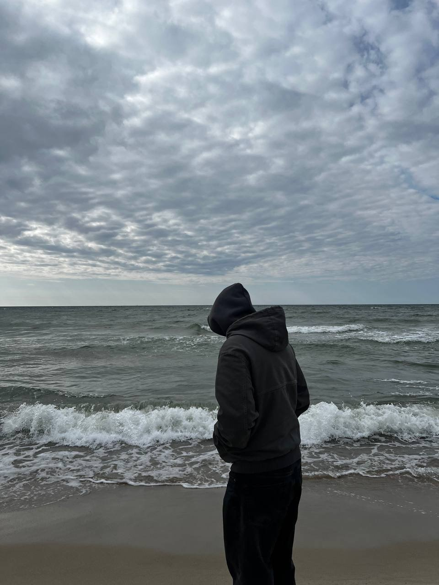
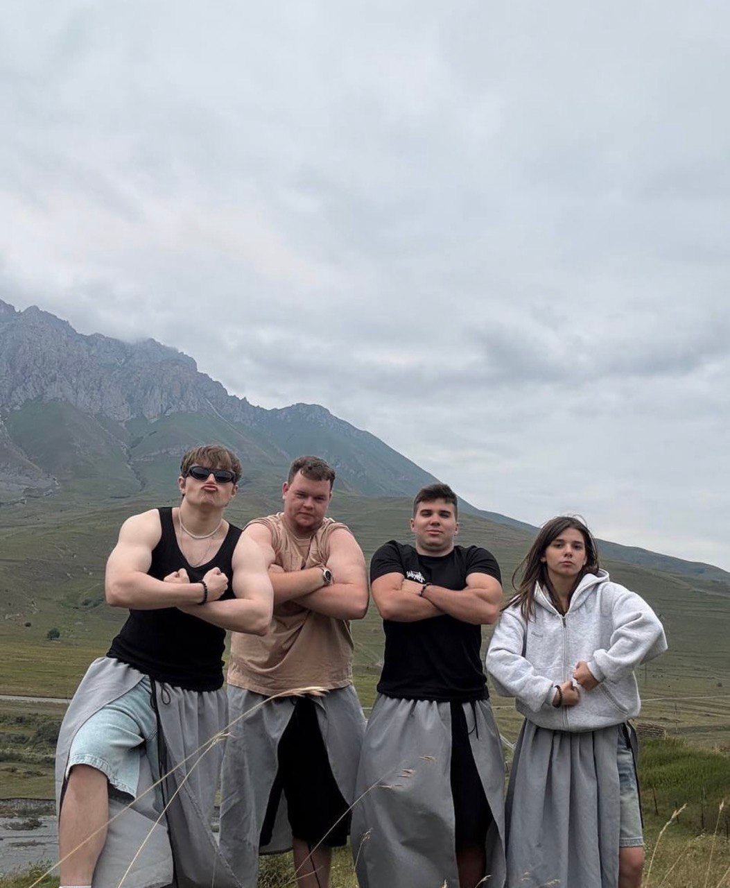
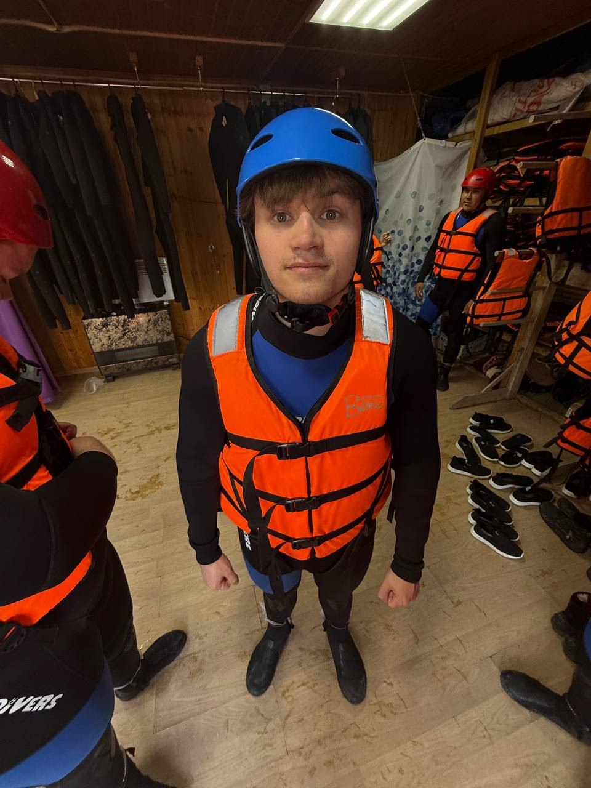
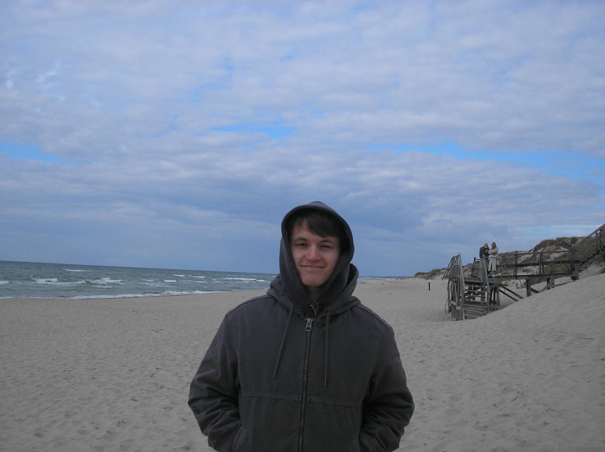

Продуктовый дизайнер с опытом около 3 лет в HR-tech, финтехе и цифровых продуктах. Проектирую интерфейсы для web и mobile на всех этапах: от исследования пользователей и определения задачи до прототипирования, тестирования и передачи решений в разработку.
Работал над HR-платформой для соискателей и работодателей, CRM-системой для финансового учёта и развитием существующих цифровых продуктов. Создаю дизайн-системы, упрощаю сложные пользовательские сценарии и выстраиваю понятные интерфейсы для разных ролей.
Эффективно работаю с продуктовой, аналитической и технической командами: умею объяснять дизайн-решения, учитывать бизнес-цели и доводить задачи до реализации.




Опыт работы
Finly
Янв. 2025 — Март 2026
Product Designer web, mobile
Разрабатывал CRM-систему для менеджеров, бухгалтеров и руководителей. Отвечал за полный цикл дизайна: исследование задач пользователей, проектирование сценариев, создание интерфейсов и развитие дизайн-системы.
Создал дизайн-систему для сложных таблиц, форм и дашбордов.
Спроектировал ключевые CRM-сценарии для разных ролей пользователей.
Проводил usability-тестирования и улучшал интерфейсы перед релизом.
ArbiHunter
Дек. 2024 — н.в.
Product Designer web, mobile
Развивал HR-платформу для соискателей и работодателей. Проектировал и обновлял пользовательские сценарии, поддерживал дизайн-систему и готовил решения к передаче в разработку.
Расширил дизайн-систему и внедрил переиспользуемые компоненты.
Переработал ключевые экраны и улучшил согласованность интерфейса.
Использовал прототипы и структурированные презентации для согласования решений со стейкхолдерами.
Else
Март 2023 — Янв. 2024
Web Designer web, mobile
Создавал интерфейсы и визуальные решения для web- и mobile-продуктов, учитывая задачи пользователей и требования бизнеса.
Проектировал страницы и пользовательские сценарии.
Работал над визуальной системой и единообразием интерфейсов.
Готовил макеты и прототипы для передачи в разработку.